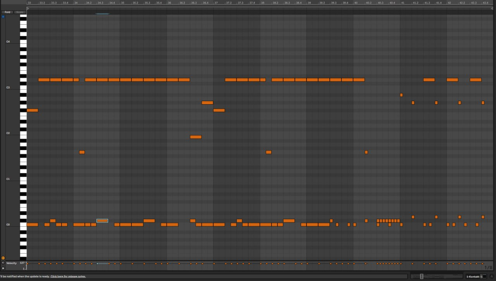

03 / midi & notation
midi.
programmed drums with a player's feel — hybrid kits, transcription, and engraved scores. a grid that breathes.

section / programming
drums
on a grid
that breathes.
Programmed and hybrid drums for producers who want the precision of MIDI without the lifelessness. Velocity-shaped, micro-timed and humanised by hand — not by a randomiser.
Works with any major DAW. Stems delivered as MIDI files, audio bounces of your chosen sample library, or both. Custom kits — your samples, my favourites, or a hybrid — on the table.
section / transcription
ear
to chart.
Audio-to-notation transcription for drum kit and percussion — from a 90-second TikTok loop to a complete album part-book. Faithful or simplified, your call.
Delivered as engraved PDF charts, plus the source files and MIDI on request. Time signatures, click maps, cue notes and section markers all included as standard.
section / deliverables
what
you get.
- MIDI
- General MIDI & SuperiorDrummer/BFD/GGD mapped · per-track stems
- Audio
- 24-bit WAV bounces of your chosen library · individual outs
- Notation
- Engraved PDF · landscape or portrait · multi-page friendly
- Source files
- Sibelius (.sib), Dorico (.dorico), MusicXML on request
- Chart styles
- Full transcription · slash & cue · simplified · lead-sheet drums
- Turnaround
- One song in 48 hours · part-books quoted by length